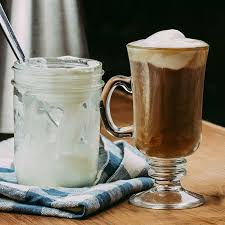
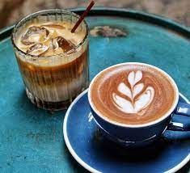
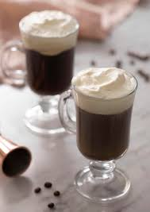
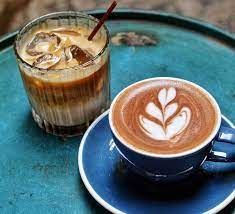
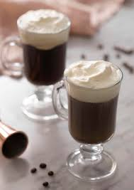

"Good Ideas Starts With Brainstroming.Great Ideas Starts With Coffee"
Your daily morning coffee provides you with more things than just an energy boost. It’s also shown to protect us against type 2 diabetes, liver diseases and lowers the risks of heart failure. But, besides health there are even more interesting facts about coffee.Coffee is darkly colored, bitter, slightly acidic and has a stimulating effect in humans, primarily due to its caffeine content.[3] It is one of the most popular drinks in the world[4] and can be prepared and presented in a variety of ways (e.g., espresso, French press, caffè latte, or already-brewed canned coffee). It is usually served hot, although chilled or iced coffee is common. Sugar, sugar substitutes, milk or cream are often used to lessen the bitter taste or enhance the flavor.
16 most interesting facts to know about coffee
- Coffee is consumed in such great quantities, it is the world’s 2nd largest traded commodity, surpassed only by crude oil. It is our most beloved beverage after water. It’s worth well over $100 billion worldwide.
- Arabica coffee was originally cultivated on the Arabian Peninsula, hence the name. Robusta coffee is a more hardy plant but contains double the amount of caffeine.
- According to International Coffee Association, Europe imports more coffee than the USA. Also, Brazil is the lead exporting country in coffee.
- The “Big Four” coffee roasting companies – Kraft, P&G, Sara Lee and Nestle – buy about 50% of the coffee produced worldwide.
- Coffee beans grow on a bush. They are actually the pit of a berry, which makes them a fruit. There are two main varieties of beans: green and red. Red beans have a nicer smell and are less acidic.
- Brazil couldn’t afford to send its athletes to Los Angeles for the 1932 Olympics, so the government sent them in a ship full of coffee which was sold on the way to finance their trip.
COFFEE GALLERY
 





Coffee Specials
Kona Coffee Beans
Kona is one of the biggest districts in Hawaii and known for one of, if not the, best tasting coffee in the world. Kona coffee is a premium arabica coffee bean variety. It grows on the highlands of Hualalai and Mauna Loa and is one of the best global coffees. Because of the Pacific micro-climate Kona Coffee Beans are deliciously great. It’s tropical, with the right amounts of rain and sun, together with rich volcanic soil. With the height from the local mountains, you get a perfect mix of light coffee with nice acidity.
Sulawesi Toraja Coffee
Sulawesi Toraja coffee is one of the hardest to produce coffee varietals in the world. With tribal growing conditions and underdeveloped infrastructure, it is ultra-rare. If you can get your hands with fine-quality Sulawesi Toraja, however, it’s worth the price you pay for. Sulawesi is an Indonesian Island near East Borneo. The people who grow it, the Toraja, do partial processing of the beans. They then give the beans to the middleman for drying and finishing, which takes days of transport.
Ethiopian Yirgacheff Coffee
The more well-known Ethiopian coffee varietal is the Yirgacheff, which is holy in the coffee world. It is one of the microregions in Sidamo that produces a golden bean even after dark roasting. When wet-washed, the taste is nothing you’ve ever put your tongue into. Yirgacheff coffee is light in body, with almost a tea-like color. It’s complex and very fruity, with the tastiest floral notes. It has a strong earthiness in its aroma, with cinnamon and berry undertones with every whiff.